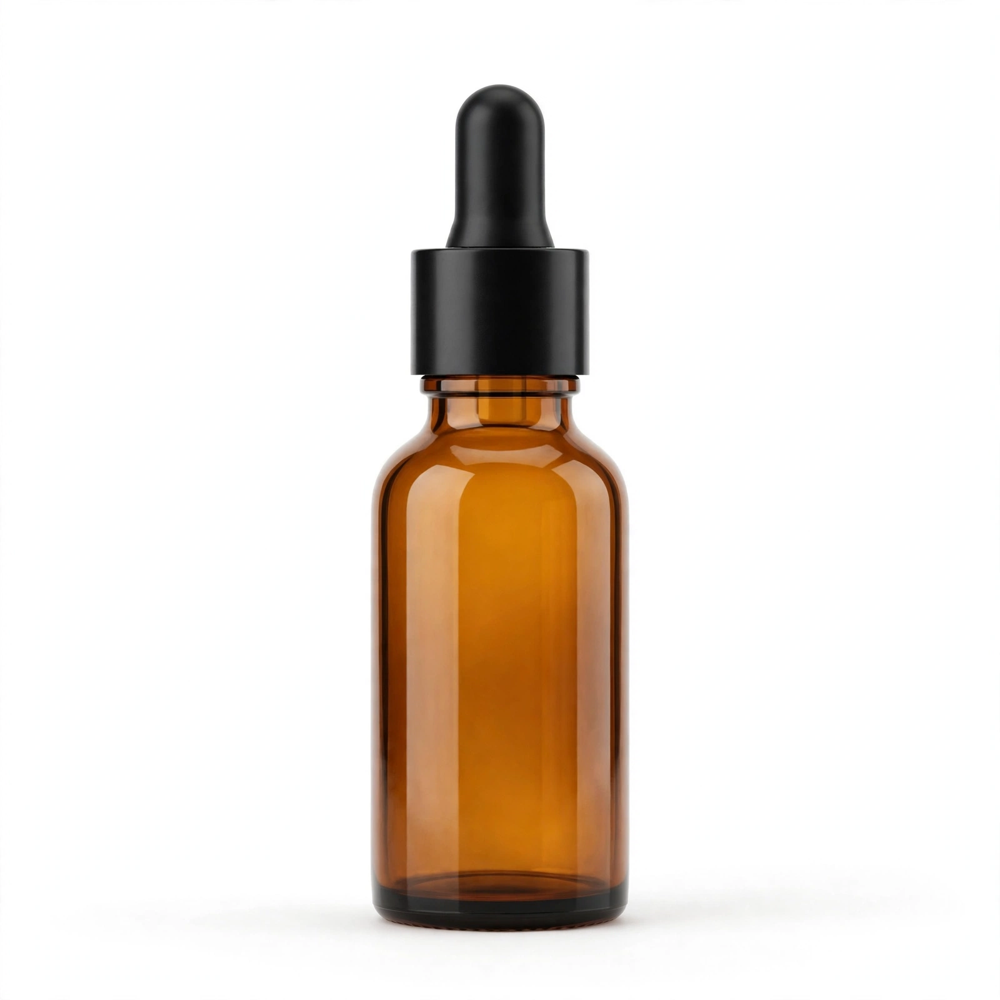

6 nov 2026 · Artigos da Amy Skin OEM
Vitamina C vs. niacinamida: qual sérum combina com a sua marca?
A vitamina C é a história iluminadora; a niacinamida é a história calma e amiga da barreira. A maioria das marcas novas começa com niacinamida porque ela se adapta a mais tipos de pele — e depois adiciona vitamina C como segundo sérum quando a marca está pronta.

Como elas se comparam?
| Sérum de vitamina C | Sérum de niacinamida | |
|---|---|---|
| História | Iluminador, radiante | Iluminação suave, cuidado com os poros |
| Força | 10% / 15% Vitamina C | Amiga da barreira, adequada para a maioria dos tipos de pele |
| Melhor primeiro sérum? | Sim, se a sua marca é sobre brilho | Sim, para a maioria das marcas novas |
| MOQ | 500–1,000 unidades por SKU | 500–1,000 unidades por SKU |
Qual você deve lançar primeiro?
Faça uma pergunta: qual é a frase com que a sua marca descreve este sérum? Se a frase é sobre brilho e luminosidade, escolha Sérum de vitamina C. Se é sobre cuidado suave e diário que a maioria dos clientes pode usar, escolha Sérum de niacinamida. Você pode lançar os dois — cada um é um SKU com um MOQ de 500–1,000 — mas lance primeiro a história mais clara.
É possível combiná-las em uma fórmula?
Essa é uma pergunta de fórmula personalizada. Conte-nos a história que você quer e as alegações com que você vende, e a equipe da fábrica confirmará se uma direção combinada se encaixa nas regras do seu mercado. De qualquer forma, você aprova uma amostra antes da produção em grande escala — veja como funciona a amostragem.
As listas INCI completas e as concentrações finais são confirmadas por pedido. Nenhum preço fixo é publicado; o preço é cotado por pedido.
Solicitar orçamento Fale conosco no WhatsApp
Próximo: Como escolher uma fórmula de sérum → · Todos os artigos →